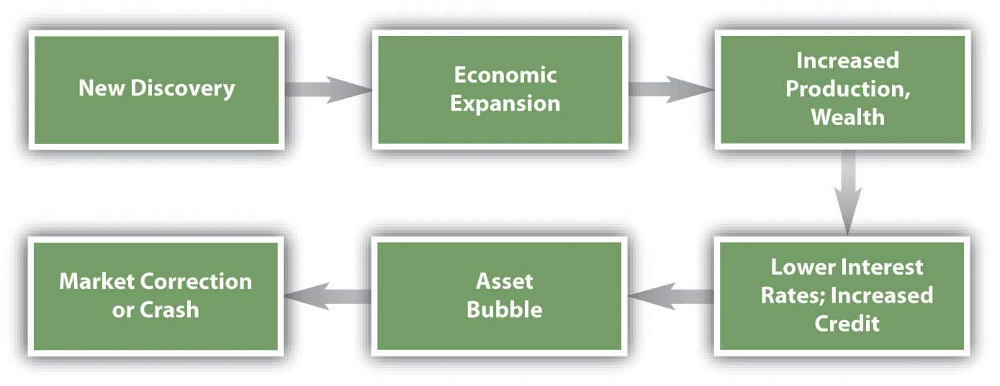
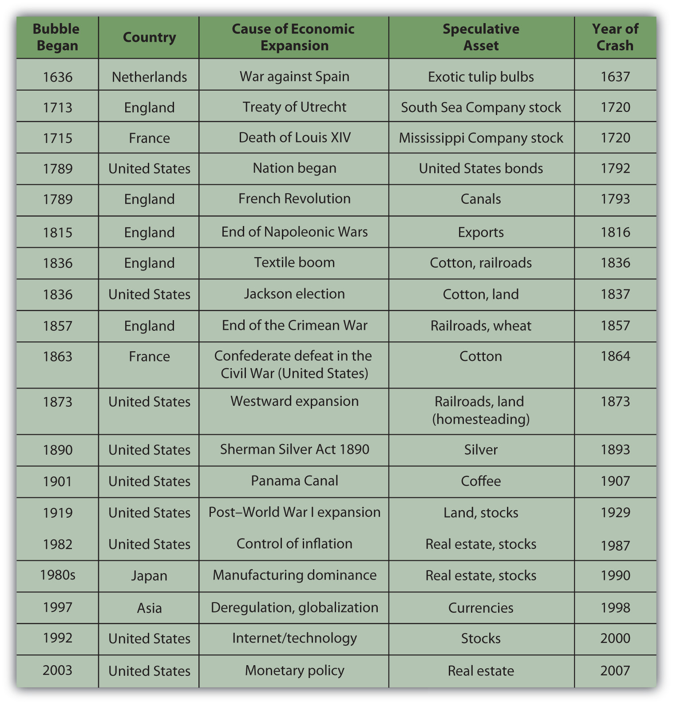
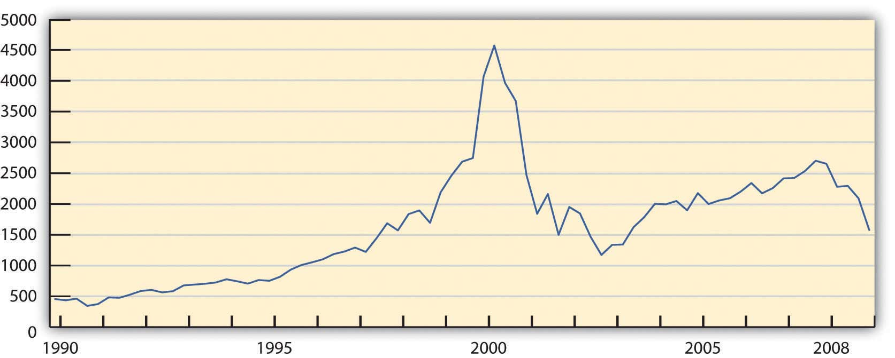

Economic forces and financial behavior can converge to create extreme markets or financial crises, such as booms, bubbles, panics, crashes, or meltdowns. These atypical events actually happen fairly frequently. Between 1618 and 1998, there were thirty-eight financial crises globally, or one every ten years.Charles P. Kindleberger and Robert Aliber, Manias, Panics, and Crashes, 5th ed. (Hoboken, NJ: John Wiley & Sons, Inc., 2005). As an investor, you can expect to weather as many as six crises in your lifetime.
Patterns of events that seem to precipitate and follow the crises are shown in Figure 13.7 "Pattern of a Financial Crisis". First a period of economic expansion is sparked by a new technology, the discovery of a new resource, or a change in political balances. This leads to increased production, markets, wealth, consumption, and investment, as well as increased credit and lower interest rates. People are looking for ways to invest their newfound wealth. This leads to an asset bubble, a rapid increase in the price of some asset: bonds, stocks, real estate, or commodities such as cotton, gold, oil, or tulip bulbs that seems to be positioned to prosper from this particular expansion.
Figure 13.7 Pattern of a Financial Crisis
The bubble continues, reinforced by the behavioral and market consequences that it sparks until some event pricks the bubble. Then asset values quickly deflate, and credit defaults rise, damaging the banking system. Having lost wealth and access to credit, people rein in their demand for consumption and investment, further slowing the economy.
Figure 13.8 "Major Asset Bubbles Since 1636" shows some of the major asset bubbles since 1636 and the events that preceded them.Charles P. Kindleberger and Robert Aliber, Manias, Panics, and Crashes, 5th ed. (Hoboken, NJ: John Wiley & Sons, Inc., 2005).
Figure 13.8 Major Asset Bubbles Since 1636
In many cases, the event that started the asset speculation was not a macroeconomic event but nevertheless had consequences to the economy: the end of a war, a change of government, a change in policy, or a new technology. Often the asset that was the object of speculation was a resource for or an application of a new technology or an expansion into new territory that may have been critical to a new emphasis in the economy. In other words, the assets that became the objects of bubbles tended to be the drivers of a “new economy” at the time and thus were rationalized as investments rather than as speculation.
In all the examples listed in Figure 13.8 "Major Asset Bubbles Since 1636", as asset values rose—even if only on the strength of investor beliefs—speculators, financed by an expansion of credit, augmented the market and drove up asset prices even further. Many irrational financial behaviors—overconfidence, anchoring, availability bias, representativeness—were in play, until finally the market was shocked into reversal by a specific event or simply sank under its own weight.
Economists may argue that this is what you should expect, that markets expand and contract cyclically as a matter of course. In this view, a crash is nothing more than the correction for a bubble—market efficiency at work.
Much has been and will be written about a classic financial crisis, the Internet stock boom of the 1990s.For a wonderfully thorough and insightful start, see Robert J. Shiller, Irrational Exuberance, 2nd ed. (New York: Random House, Inc., 2005). The asset bubble was in the stocks of emerging companies poised to take advantage of the “new economy” and its expanding markets of the new technology of the Internet.
The asset bubble grew from preceding economic events. The previous decade had seen a recovery from a major inflation and a recession in the United States followed by an economic expansion. Deregulation and new technologies had opened up the telecommunications industry. In 1989 the Soviet Union dissolved, opening markets and market economies in Eastern Europe as well as the former Soviet Union (FSU). The personal computer had taken hold and was gaining in household saturation.
This mix of relative prosperity, low inflation, new global markets, and new technology looked very promising. Classically, the economy expanded, and a new asset bubble was born.
Most Internet companies that were publicly traded were listed on the NASDAQ exchange. Figure 13.9 "NASDAQ Composite Index, 1989–2008" shows the NASDAQ composite index from 1991 to 2002.
Figure 13.9 NASDAQ Composite Index, 1989–2008Graph created by the author, based on data retrieved from Yahoo! Finance, http://finance.yahoo.com (accessed October 21, 2009).
Between 1990 and 2000 the NASDAQ Composite Index increased ten-fold. At the height of the bubble, between 1998 and 2000, the value of the index increased 2.5 times, resulting in an average annualized return of over 58 percent.
Alan Greenspan, then Chair of the Federal Reserve Bank, spoke on Capital Hill at the end of January 1999. In response to the question about how much of the stock boom was “based on sound fundamentals and how much is based on hype.” Greenspan replied,
“First of all, you wouldn’t get ‘hype’ working if there weren’t something fundamentally, potentially sound under it.
“The size of the potential market is so huge that you have these pie-in-the-sky type of potentials for a lot of different [firms]. Undoubtedly, some of these small companies whose stock prices are going through the roof will succeed. And they may very well justify even higher prices. The vast majority are almost sure to fail. That’s the way markets tend to work in this regard.…
“But there is at root here something far more fundamental—the stock market seeking out profitable ventures and directing capital to hopeful projects before profits materialize. That’s good for our system. And, in fact, with all its hype and craziness, is something that, at the end of the day, is probably more plus than minus.”John Cassidy, Dot.con (New York: HarperCollins, 2002), 202.
Greenspan implies that the bubble “with all its hype and craziness” is nothing more than business as usual in the capital markets. He sees the irrational as somewhat rational and not merely the “irrational exuberance” that he saw little more than two years earlier.Robert J. Shiller, Irrational Exuberance, 2nd ed. (New York: Random House, Inc., 2005), 1.
Going back a bit further, the Crash of 1929 was perhaps the most profound end to an asset bubble, at least in the American psyche, as it seemed to precipitate a lengthy depression, the Great Depression. The reasons for the prolonged recession that followed the crash are complex, but the factors leading up to it illustrate a classic asset bubble.
In the decade after World War I, the U.S. economy boomed. With the war over, inflation eased and markets opened. Our manufacturing competitors in Europe had suffered losses of labor, capital, and infrastructure that allowed the United States to establish a global dominance. Technologies such as radio were changing the speed of life, while the mass production of everything from cars to appliances was changing the quality of life. Electrification and roads developed a national infrastructure. To finance the consumption of all this mass production, the idea of “store credit” was beginning to expand into the system of consumer credit that we use today. As interest rates stayed low, levels of household and corporate debt rose.
New technologies were developed by new corporations that needed mass, public financing. As more and more shares were issued, they were pitched more fervently to encourage more investment by more investors. Investing became the national pastime, share prices rose, and investors were reassured that technology had spawned a new economy to create new wealth. As in the 1990s, the mix of relative prosperity, low inflation, new global markets, and new technology looked very promising. The positive feedback loop of a classic asset bubble had been created.
After it was all over, Groucho, one of the famous Marx Brothers comedians, reflected on the rationalized irrationality of the bubble: “I would have lost more, but that was all the money I had.”Julius Henry Marx, Groucho and Me (New York: Da Capo Press, Inc., 1995), 197. Originally published in 1959.
Given that you can expect to encounter at least a few crises during your investing lifetime, as you think about investing—creating and managing wealth—how can you protect yourself? How can you “keep your head when all about you / Are losing theirs,”Rudyard Kipling, Complete Verse (New York: Anchor Books, 1988). and is that really the right thing to do?
Financial crises follow a typical pattern of
View a flowchart of the financial crisis of 2007 at Mint.com (http://www.mint.com/blog/trends/a-visual-guide-to-the-financial-crisis/). How did the real estate market become so inefficient? What thinking does the chart identify that fed into the real estate crash? For each thought bubble on the chart, what kind of bias or framing or other mental accounting was taking place? In what ways was investor behavior irrational? On the other hand, how might you argue that investors were not deciding irrationally?